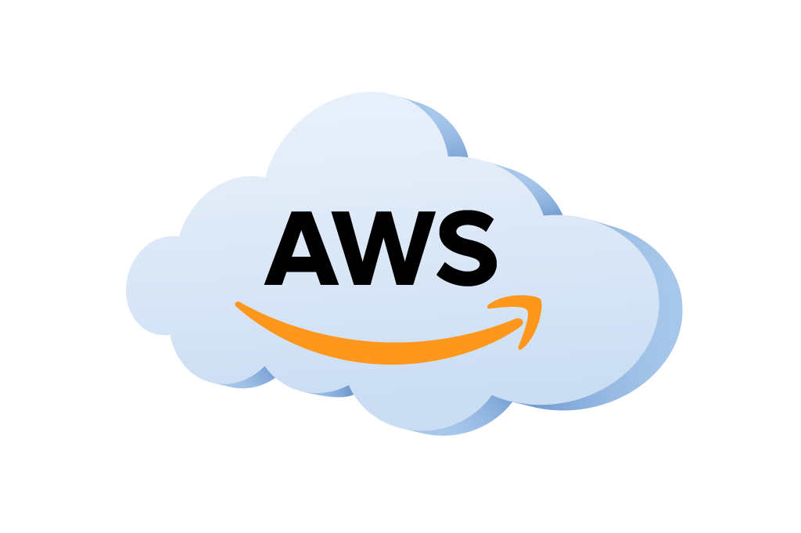

Plataformas Tecnológicas
Las plataformas tecnológicas en la nube son conjuntos de servicios y herramientas que permiten a las organizaciones desarrollar, implementar y administrar aplicaciones y servicios en la nube de manera eficiente y escalable. Estas plataformas ofrecen una amplia gama de servicios, desde almacenamiento y computación hasta inteligencia artificial y machine learning, que permiten a las empresas satisfacer una variedad de necesidades informáticas y empresariales.
Amazon Web Services (AWS):
- AWS es uno de los proveedores líderes en el mercado de servicios en la nube, ofreciendo una amplia gama de servicios que incluyen cómputo, almacenamiento, bases de datos, análisis, machine learning, Internet de las cosas (IoT) y más.
- Ejemplos de servicios populares de AWS incluyen Amazon EC2 para computación en la nube, Amazon S3 para almacenamiento de objetos, Amazon RDS para bases de datos relacionales y Amazon Lambda para ejecución de código sin servidor.
Microsoft Azure:
- Azure es la plataforma en la nube de Microsoft que ofrece una amplia variedad de servicios y herramientas para desarrollar, implementar y administrar aplicaciones en la nube.
- Entre los servicios más destacados de Azure se encuentran Azure Virtual Machines para cómputo en la nube, Azure Blob Storage para almacenamiento de objetos, Azure SQL Database para bases de datos y Azure Functions para ejecución de funciones sin servidor.
Google Cloud Platform (GCP):
- GCP es la plataforma en la nube de Google que proporciona una infraestructura escalable y servicios avanzados para el desarrollo, la implementación y la gestión de aplicaciones en la nube.
- Algunos de los servicios clave de GCP incluyen Google Compute Engine para cómputo en la nube, Google Cloud Storage para almacenamiento de objetos, Google Cloud SQL para bases de datos y Google Cloud Functions para ejecución de funciones sin servidor.
IBM Cloud:
- IBM Cloud es la plataforma en la nube de IBM que ofrece una amplia gama de servicios y soluciones para satisfacer las necesidades empresariales de desarrollo, implementación y administración de aplicaciones en la nube.
- Ejemplos de servicios de IBM Cloud incluyen IBM Cloud Virtual Servers para cómputo en la nube, IBM Cloud Object Storage para almacenamiento de objetos, IBM Cloud Databases para bases de datos y IBM Cloud Functions para ejecución de funciones sin servidor.
Oracle Cloud Infrastructure (OCI):
- OCI es la plataforma en la nube de Oracle que proporciona una infraestructura segura y escalable, así como servicios avanzados para el desarrollo, la implementación y la gestión de aplicaciones en la nube.
- Algunos de los servicios destacados de OCI incluyen Oracle Compute Cloud para cómputo en la nube, Oracle Object Storage para almacenamiento de objetos, Oracle Autonomous Database para bases de datos y Oracle Functions para ejecución de funciones sin servidor.